Code
set scheme white2
color_style tableauThe last part of the series of Stata Basics: Graphs! In this quick tutorial should provide you with a solid foundation for creating high-quality graphs in Stata. Granted, Stata’s graphing capabilities are not as flexible and fast as R or Python, but they are still powerful and can produce almost every type of graph you might need.
But before we start, a brief comment on graphs in Stata. One of the most important things when making good graphs is to choose good colors, and good schemes (or themes). Up to Stata 17, the default color scheme was s2color, which is not the best. In Stata 18, a new color scheme was introduced, which is more visually appealing. Of course, if you have an earlier version of Stata, you may want to consider other options.
So, to get you in the right path, you may want to first get few things installed in your Stata.
net install palettes , replace from("https://raw.githubusercontent.com/benjann/palettes/master/")
net install colrspace, replace from("https://raw.githubusercontent.com/benjann/colrspace/master/")
ssc install grstyle
ssc install color_stylepalette and colrspace, both by Ben Jann, are packages that allow you to easily create colors that can be used as part of your scheme. grstyle, also by Ben Jann, is another small tool that is very useful to make changes in the scheme files.
Finally, a small wrapper of my own design: color_style. This package uses the previous ones for one main purpose. Change the color palettes used in the current scheme. That way, you do not need to make changes manually, and can easily change colors as needed. Now a quick setup:
set scheme white2
color_style tableauBefore we start with the guide, a quick word on why data visualization matters the data analysis process:
With these benefits in mind, let’s begin!
Before we start making graphs, let’s start with a brief overview of Stata’s graphing syntax and some basic principles.
Most Stata graph commands follow a similar structure:
graph_type y_variable(s) [x_variable] [if] [in] [weight] [, options]Where: - graph_type is the type of graph you want to create (e.g., scatter, line, bar) - y_variable is typically the dependent variable - x_variable is typically the independent variable - [if] and [in] are optional conditions to subset your data - [weight] is an optional weighting specification - [, options] are additional specifications to customize your graph
In terms of Graph Types, we could possibly classify them into two main categories. you have the two way graphs, and the graph graphs.
The first type are graphs that can be overlaid on top of each other. The second, however, cannot be overlay. In addition to that, most community-contributed commands are typically two way graphs. However, they cannot be overlayed with the official ones. Which Its perhaps the biggest weakness of Stata’s graphical capabilities.
Let’s create a simple scatter plot to get started. We’ll use the built-in “auto” dataset:
sysuse auto, clear
scatter mpg weight
scatter mpg weight, title("Miles per Gallon vs. Weight") /// Adds a title
xtitle("Weight (lbs)") /// label to the x-axis
ytitle("Miles per Gallon") // and y-axis Done!
Now some points to consider. title is important, but often you may want to add a title in your editor, not the figure. Same if you add a note. Otherwise, the above code is a good start.
Also noticed that because of my setup using white2 scheme, the background is white, and minimalistic. The colors, from tableau are generally a good choice for most graphs.
Wait, but how does this look like? Let’s see:
sysuse auto, clear
scatter mpg weight, title("Miles per Gallon vs. Weight") /// Adds a title
xtitle("Weight (lbs)") /// label to the x-axis
ytitle("Miles per Gallon") /// and y-axis
scale(1.5)(1978 automobile data)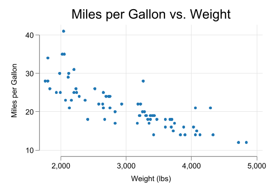
From here on, I will produce the figures directly, and you can check the code to reproduce them in your own work.
Scatter plots, what we just did, its perhaps the most basic plot you will use. They are excellent for visualizing the relationship between two continuous variables. They can reveal patterns, correlations, and outliers in your data.
The basic syntax for a scatter plot is:
scatter [varlist y] [xvar] [if] [in] [weight] [, options]As you may expect, varlist y can be a list of variables, all which will be plotted against xvar. However, I would recommend you to use only one variable at a time.
If multiple variables are required, you can use twoway to overlay them.
twoway (scatter [yvar1] [xvar] [if] [in] [weight] [, options]) /// <-first
(scatter [yvar2] [xvar] [if] [in] [weight] [, options]) // <-secondEach scatter plot can have its own options, colors, and labels.
For example:
sysuse auto, clear
twoway (scatter mpg weight if foreign==0) ///
(scatter mpg weight if foreign==1) ///
, title("Miles per Gallon vs. Weight: By foreign") ///
xtitle("Weight (lbs)") ///
ytitle("Miles per Gallon") ///
scale(1.5) ///
legend(order(1 "Domestic" 2 "Foreign") )(1978 automobile data)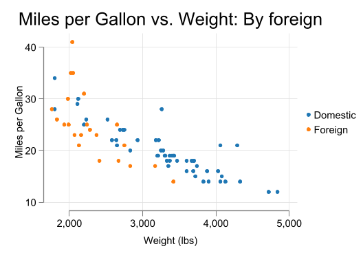
Now this plot is combining various features.
twoway command (two for short) is used to overlay the two scatter plots.legend adds a legend to the graph, specifying the order of the labels. In white2 scheme, the legend is at the left of the graph.position(#), where # is a number from 1 to 12. You may also want to use cols(#) or rows() to change the layout of the legend.legend(order(1 "Domestic" 2 "Foreign") position(3) cols(1))You can change the appearance of the markers using various options, like mcolor(), msymbol(), or msize(). From all of these, I prefer using pstyle() to change the colors, and other options for the size of shape, because pstyle() is connected to the color scheme you are using, and mcolor() for added options like transparency. Lets try this with the previous example:
sysuse auto, clear
twoway (scatter mpg weight if foreign==0, pstyle(p3) msize(2)) ///
(scatter mpg weight if foreign==1, pstyle(p5) mcolor(%50)) ///
, title("Miles per Gallon vs. Weight: By foreign") ///
xtitle("Weight (lbs)") ///
ytitle("Miles per Gallon") ///
scale(1.5) ///
legend(order(1 "Domestic" 2 "Foreign") )(1978 automobile data)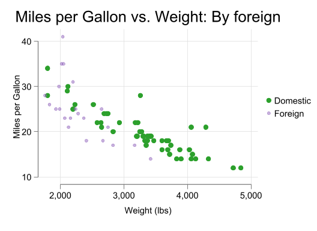
There are other options you may want to try. For example, mlabel() and mlabsize() to add labels to the points. Just be careful with the size of the labels, as the figure could become very busy. If you try the code below, you will see that the figure is not very informative.
scatter mpg weight, mlabel(make) ///
mlabsize(tiny)This adds the car make as a label to each point.
Let’s combine several elements to create a more informative scatter plot:
two (scatter mpg weight, mcolor(%30) msize(5) ) ///
(scatter mpg weight in 1/5, pstyle(p1) mlabel(make) mlabsize(small) ), ///
title("MPG vs. Weight") ///
subtitle("1978 Automobile Data") ///
xtitle("Weight (lbs)") ytitle("Miles per Gallon") ///
note("Source: Auto dataset") ///
legend(off) scale(1.4)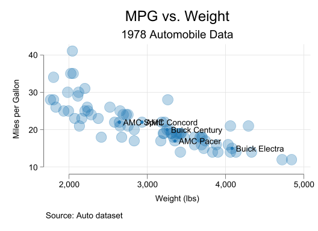
This plot includes: - Semi-transparent circles - Labels for few points (car make) - Informative title, subtitle, and axis labels - A note indicating the data source - No legend (turned off) (every time you have more than 1 plot, the legend will be displayed)
While you can always use scatter plot for plotting multiple multiple variables, any now and then you will need a more “brute force approach”, where a large set of variables are plotted at aonce. If you are interested in this, you can use a scatter plot matrix. It has the following syntax:
graph matrix [varlist], [half]Where varlist is a list of variables to be plotted. This will make a matrix of scatter plots for all pairs of the specified variables. The half option will only plot the lower half of the matrix. Of course, such a plot can be very busy, so be careful with the number of variables you include. Here an example:
graph matrix price mpg weight length, half ///
xsize(12) ysize(8) title("Scatter Plot Matrix")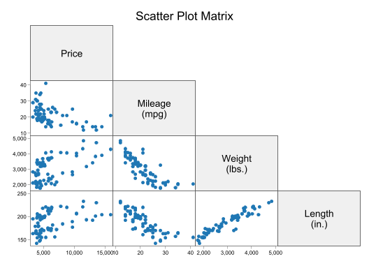
Line plots are the second most common type of plot you will use. They are excellent for visualizing trends over time or another continuous variable.
In general, I would classify them in three types. The basic line plot, and model based line plots.
The basic lineplot is the one that uses all the data to create a plot, going from one coordinate to the next. Think of it as a connect the dots plot. Because of this, the plot can be very different depending on the order of the data.
The model based plot is often more useful, as it uses some univariate model (linear, quadratic, etc) to create the line. This is often more useful, as it can show the trend of the data, without the noise.
Lets start with the basic line plot:
Similar to scatter plots, you can use multiple variables in a line plot, to be plotted against a single variable.
sysuse uslifeexp, clear
line le_w le_m year, ///
title(Life expectancy for men and women over time)(U.S. life expectancy, 1900-1999)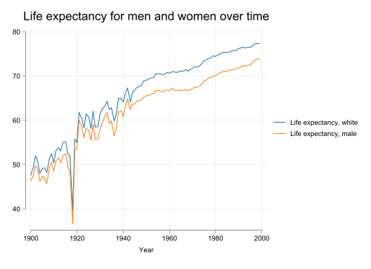
Which works well, because the data was ordered by year. If i were to order it by Life expectancy, the plot would be very different, bordering non-sensical.
sysuse uslifeexp, clear
sort le_w
line le_w le_m year, ///
title(Life expectancy for men and women over time)(U.S. life expectancy, 1900-1999)This plot allows for a few customizations. For example, you can change the line style, color, and width:
sort year
line le_w le_m year, lpattern(solid dash) ///
pstyle(p2 p3) ///
lwidth(thick medium) ///
xline(1930/1936, lw(2) lp(solid) lcolor(gs12)) ///
title(Life expectancy for men and women over time)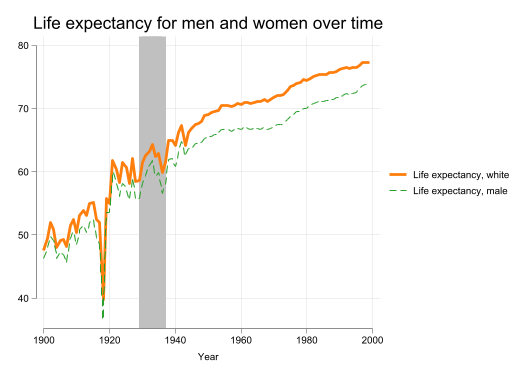
In addition to the line, I also added some shading for the years 1930 to 1936. Useful if you want to emphasize a particular period.
As with Scatter plot, and infact most two-way plots, you can customize the plot in many ways.
line le_w le_m year, lpattern(solid dash) ///
lcolor(red blue) ///
lwidth(medthick medium) ///
title("Life Expectancy Trends") ///
subtitle("United States, 1900-2000") ///
xtitle("Year") ytitle("Life Expectancy (years)") ///
ylabel(40(10)80, angle(0)) ///
xlabel(1900(20)2000) ///
legend(order(1 "Women" 2 "Men")) ///
note("Source: US Life Expectancy dataset")Something that its recommended to use more often are model-based line plots. That means that you are not plotting the data, but the predictions of a model. This is useful to better see patterns when the data is noisy.
Lets use the dui dataset and produce a combination of scatter plot with a line plot. On top of that, we will use confidence intervals. (typically means adding a ci to the command)
Lets see how they look like:
webuse dui, clear
two (scatter citations fines) ///
(lfitci citations fines, fcolor(%40)) , ///
legend(off) scale(1.4) ///
ytitle("Citations") xtitle("Fines in 000$")(Fictional data on monthly drunk driving citations)webuse dui, clear
two (scatter citations fines) ///
(qfitci citations fines, fcolor(%40)) , ///
legend(off) scale(1.4) ///
ytitle("Citations") xtitle("Fines in 000$")(Fictional data on monthly drunk driving citations)webuse dui, clear
two (scatter citations fines) ///
(lpolyci citations fines, fcolor(%40)) , ///
legend(off) scale(1.4) ///
ytitle("Citations") xtitle("Fines in 000$")(Fictional data on monthly drunk driving citations)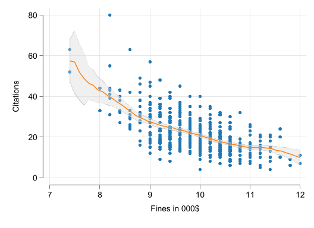
When it comes to visualizing the distribution of a single variable, your main options are histograms, density plots, and box plots. Histograms and kdensity plots are both twoway plots that can be overlayed. Box plots, however, are graph plots, and are a bit more temperamental.
The first command we will see is the histogram command. This command is used to create histograms, which are bar charts that show the frequency distribution of a single variable.
In contrast with frequency tables, where you need to define the bins width or number of bins, histograms will do this for you. Not always in the best way, but it will do it.
The basic syntax for a histogram is:
histogram [varname] [if] [in] [weight] [, options]Perhaps the biggest complain I have about histograms is that they do not allow for aweights. So if your weights are fractional, you may need to consider other works around.
Lets see how this works
The basic histogram plot will try to produce densities on the y-axis. It usually labels it correctly.
You can, however, request frequency or percent on the y-axis.
webuse dui, clear
histogram fines, ///
title("Histogram of Fines") ///
xtitle("Fines in 000$") (Fictional data on monthly drunk driving citations)
(bin=22, start=7.4000001, width=.2090909)By default, histogram will calculate the number of bins for you. However, you can specify the number of bins using the bin() option. Alternatively, you can use width() instead, making it either more or less granular.
histogram fines, ///
title("Histogram of Fines") ///
xtitle("Fines in 000$") width(.4)(bin=12, start=7.4000001, width=.4)histogram fines, ///
title("Histogram of Fines") ///
xtitle("Fines in 000$") width(.1)(bin=46, start=7.4000001, width=.1)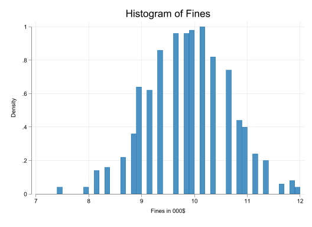
Wider bins will make the plot more general, but you lose some of the detail. Narrower bins will make the plot more detailed, but you may lose the overall picture. Its the classic bias-variance tradeoff.
As mentioned before, because histograms are twoway plots, you can overlay them. This is useful when you want to compare the distribution of a variable across different groups (Low number of groups). Note that by default, histograms come with just one color, but you can change this using the pstyle() option.
You may want to use transparency to make the plot more readable. and even use other options to make the plot visually appealing.
For the last example, I will also use a global to pass options that are common to all subplots.
two (histogram citations if csize==1, pstyle(p1)) ///
(histogram citations if csize==2, pstyle(p2)) ///
(histogram citations if csize==3, pstyle(p3)) , ///
title("Histogram of citations") ///
subtitle("By city Size") ///
xtitle("Fines in 000$") ///
legend(order(1 "Small" 2 "Medium" 3 "Large"))two (histogram citations if csize==1, pstyle(p1) color(%75)) ///
(histogram citations if csize==2, pstyle(p2) color(%75)) ///
(histogram citations if csize==3, pstyle(p3) color(%75)), ///
title("Histogram of citations") ///
subtitle("By city Size") ///
xtitle("Fines in 000$") ///
legend(order(1 "Small" 2 "Medium" 3 "Large"))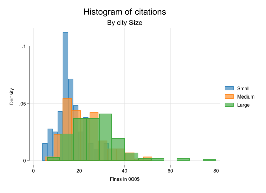
global options width(3) start(0) color(%55)
two (histogram citations if csize==1, pstyle(p1) $options) ///
(histogram citations if csize==2, pstyle(p2) $options) ///
(histogram citations if csize==3, pstyle(p3) $options), ///
title("Histogram of citations") ///
subtitle("By city Size") ///
xtitle("Fines in 000$") ///
legend(order(1 "Small" 2 "Medium" 3 "Large"))One more note. Histograms assume your dependent variable is continuous. However, you could also use them as discrete, by simply adding the discrete option. Unless width() is specified, each bar will represent a single value.
As mentione before, histograms are a good way to visualize distributions of a single variable. Something that histograms do not do well is provide a smooth estimate of the probability density function. And, in Stata, its not possible to add fractional weights to histograms.
There is, however, another option. Kernel Density Plots. These plots provide a smooth estimate of the probability density function of a variable. As with Histograms, they can be very sensitive to the choice of bandwidth (how smooth or rugged the plot is).
One should also note that Kernel density plots cannot be used to plot distributions of discrete variables, and may provide misleading results if used with data that have constraints, or very relevant modes.
The basic syntax for a kernel density plot is:
kdensity [varname] [if] [in] [weight] [, options]And because its a twoway plot, you can overlay them with other plots.
Lets see how this works with the dui dataset.
webuse dui, clear
kdensity citation, ///
title("Kernel Density Estimate of Citations") ///
xtitle("# of Citations") ///
ytitle("Density") scale(1.5) (Fictional data on monthly drunk driving citations)Noticed how smooth the plot is. The bwidth was set to 2.31, which is constructed using a rule of thumb. It also uses epanechnikov as the default kernel. While you can change the kernel() function, the default one is “optimal” for most cases. What would be more important is the bwidth() option.
As mentioned before, the bandwidth is a very important parameter. You can set it manually, with the understanding that a smaller bandwidth will make the plot more rugged, and a larger bandwidth will make it smoother. At the limit (infinite bandwidth), the plot will be a horizontal line, and on the other end, it would look like a histogram (each value its own curve)
webuse dui, clear
kdensity citation, ///
title("Kernel Density Estimate of Citations") ///
xtitle("# of Citations") ///
ytitle("Density") scale(1.5) bw(1)(Fictional data on monthly drunk driving citations)webuse dui, clear
kdensity citation, ///
title("Kernel Density Estimate of Citations") ///
xtitle("# of Citations") ///
ytitle("Density") scale(1.5) bw(4)(Fictional data on monthly drunk driving citations)Perhaps of interest to some, the Kernel Density does not estimate the bandwidth for every point of data. Instead, it uses a map of points to reduce the computational burden. Then, simply makes a lineplot. If you want to see the curve for every point in your data, you have to use the at() option.
Many of the options you can use with histograms, scatterplots or line plots can also be used with Kernel Density plots. However, I will introduce one that some may find useful: recast. This option allows you to change the plot type from a line to something else. For example, you can use recast(area) to fill the area under the curve.
webuse dui, clear
kdensity citation, ///
title("Kernel Density Estimate of Citations") ///
xtitle("# of Citations") ///
ytitle("Density") scale(1.5) ///
recast(area) (Fictional data on monthly drunk driving citations)This is not the most effective way of changing the plot type, but does the work if the data is small. With larger datasets, other methods may be more useful.
What about overlaying? We can do that as well, as we did with histograms. Ohh, and in contrast with histograms, you do not need to specify colors, as you did with histograms.
global options bw(3)
two (kdensity citations if csize==1, $options ) ///
(kdensity citations if csize==2, $options ) ///
(kdensity citations if csize==3, $options ) , ///
title("kdensity of citations") ///
subtitle("By city Size") ///
xtitle("Fines in 000$") ///
legend(order(1 "Small" 2 "Medium" 3 "Large"))
global options bw(3) recast(area )
two (kdensity citations if csize==1, $options ) ///
(kdensity citations if csize==2, $options ) ///
(kdensity citations if csize==3, $options ) , ///
title("kdensity of citations") ///
subtitle("By city Size") ///
xtitle("Fines in 000$") ///
legend(order(1 "Small" 2 "Medium" 3 "Large"))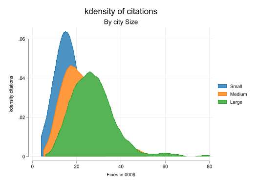
global options bw(3) recast(area) color(%50)
two (kdensity citations if csize==1, $options ) ///
(kdensity citations if csize==2, $options ) ///
(kdensity citations if csize==3, $options ) , ///
title("kdensity of citations") ///
subtitle("By city Size") ///
xtitle("Fines in 000$") ///
legend(order(1 "Small" 2 "Medium" 3 "Large"))Few things to notice here.
There is a fairly large list of plots that fall under this category. Range plots are mostly used to show, as the name implies, a particular range of values. Perhaps the most common of these would be to show confidence intervals.
They all have a similar syntax:
two range_plot y_lower y_higher x_variable [if] , [options]As you can see, the main difference is that you need to specify a lower and upper bound for the y-axis. And, as you can imagine, this will generate a nice rendition of a range.
Perhaps the biggest issue with these plots is that you need to prepare the data beforehand. This is not a big issue.
So lets see how this works:
To show how this type of plots work, I will use the dataset cattaneo2. This dataset contains data for childrens weight at birth, in addition to other relevant information. I will do some data manipulation to create the data I need for the plots
webuse cattaneo2, clear
// Constrain age of mother
drop if mage<18 | mage>35
// Get summary for Weight at birth
// mean and p25 and p75 by age and smoking
collapse (mean) mean_bweight=bweight ///
(p25) p25_bweight=bweight ///
(p75) p75_bweight=bweight, by(mage mbsmoke)(Excerpt from Cattaneo (2010) Journal of Econometrics 155: 138–154)
(488 observations deleted)Now that we have the data, lets create the plot(s). Each one will show the range of weights at birth for different groups of mothers. To add additional information, I will also add the mean “weight at birth” as a scatter plot.
two (rarea p25_bweight p75_bweight mage if mbsmoke==0, color(%50)) ///
(scatter mean_bweight mage if mbsmoke==0, pstyle(p1) connect(l)) , ///
title("Range of Birth Weight by Mother's Age") ///
xtitle("Mother's Age") ///
ytitle("Birth Weight (lbs)") ///
legend(off) scale(1.4) ///
note("Note: The shaded area represents the 25th to 75th percentile range")two (rbar p25_bweight p75_bweight mage if mbsmoke==0, color(%50)) ///
(scatter mean_bweight mage if mbsmoke==0, pstyle(p1) connect(l)) , ///
title("Range of Birth Weight by Mother's Age") ///
xtitle("Mother's Age") ///
ytitle("Birth Weight (lbs)") ///
legend(off) scale(1.4) ///
note("Note: The shaded area represents the 25th to 75th percentile range")two (rspike p25_bweight p75_bweight mage if mbsmoke==0, color(%50)) ///
(scatter mean_bweight mage if mbsmoke==0, pstyle(p1) connect(l)) , ///
title("Range of Birth Weight by Mother's Age") ///
xtitle("Mother's Age") ///
ytitle("Birth Weight (lbs)") ///
legend(off) scale(1.4) ///
note("Note: The shaded area represents the 25th to 75th percentile range")two (rcap p25_bweight p75_bweight mage if mbsmoke==0, color(%50)) ///
(scatter mean_bweight mage if mbsmoke==0, pstyle(p1) connect(l)) , ///
title("Range of Birth Weight by Mother's Age") ///
xtitle("Mother's Age") ///
ytitle("Birth Weight (lbs)") ///
legend(off) scale(1.4) ///
note("Note: The shaded area represents the 25th to 75th percentile range")two (rcapsym p25_bweight p75_bweight mage if mbsmoke==0, color(%50)) ///
(scatter mean_bweight mage if mbsmoke==0, pstyle(p1) connect(l)) , ///
title("Range of Birth Weight by Mother's Age") ///
xtitle("Mother's Age") ///
ytitle("Birth Weight (lbs)") ///
legend(off) scale(1.4) ///
note("Note: The shaded area represents the 25th to 75th percentile range"):::
The rest (rscatter, rline and rconnected) are not very useful, as they are just a scatter plot, line plots, or both.
And of course, you can combine them!
two (rarea p25_bweight p75_bweight mage if mbsmoke==0, pstyle(p1) color(%50)) ///
(scatter mean_bweight mage if mbsmoke==0, pstyle(p1) connect(l)) ///
(rarea p25_bweight p75_bweight mage if mbsmoke==1, pstyle(p2) color(%50)) ///
(scatter mean_bweight mage if mbsmoke==1, pstyle(p2) connect(l)) , ///
title("Range of Birth Weight by Mother's Age") ///
xtitle("Mother's Age") ///
ytitle("Birth Weight (lbs)") ///
legend(order(1 "NonSmokers" 3 "Smokers")) ///
scale(1.4) ///
note("Note: The shaded area represents the 25th to 75th percentile range")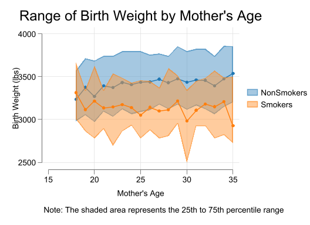
This are the most basic, yet most useful plots you will use in your data analysis. There are, however, other types of plots that Stata can produce from the box:
graph pie: Pie chartsgraph bar: Bar charts, where the bars can be horizontal or vertical, stacked or unstacked, by groups, which can be used to represent many statistical summaries. (The command itself will generate those summaries)graph dot: Dot plots, which are similar to bar charts but use dots instead of bars. Useful to compare summary statistics with a less cluttered plot. Not to be confused with twoway dot.There are also the pair coordinated plots. Where you provide 4 variables, which indicate the initial and final coordinates of a line. So something to keep in mind.
Other than this, there are many community-contributed commands that can be used to create more complex plots, including my own contributions. For for basic data analysis, the above should be more than enough.